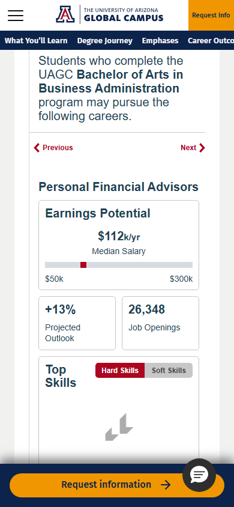
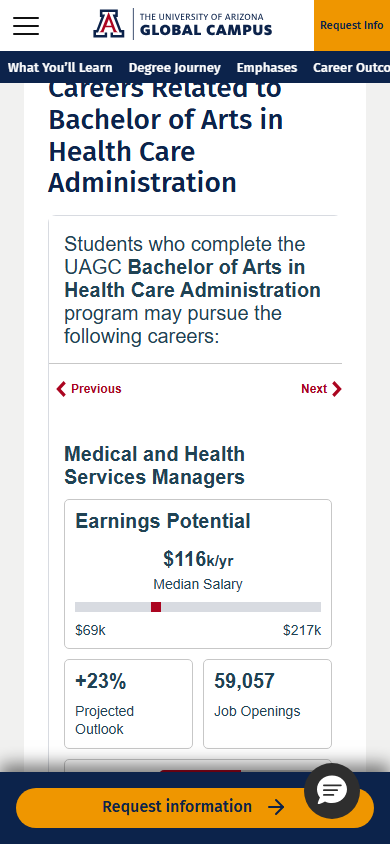
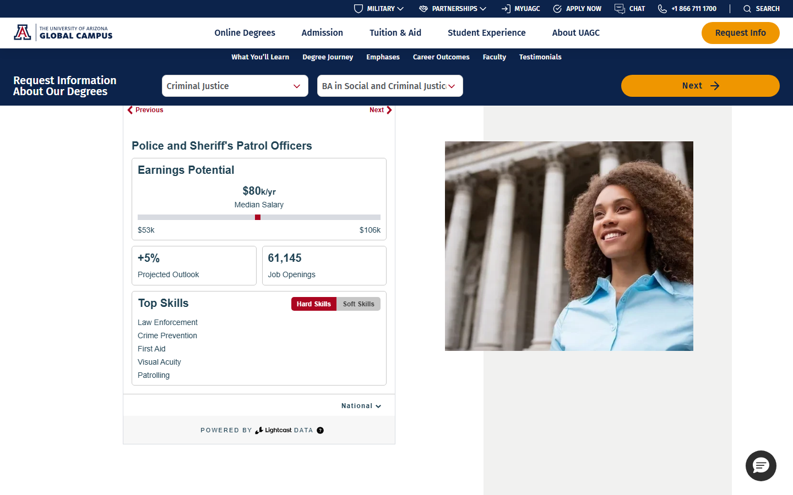
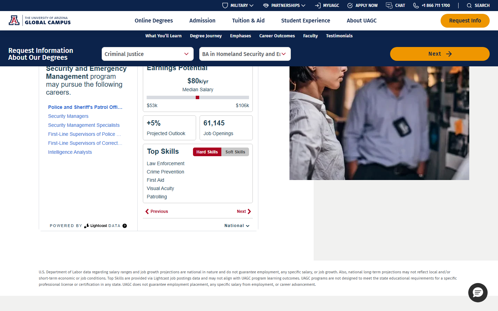

UAGC Program Performance Report
Lead funnel | Primary: Oct 2025 – Mar 2026 vs Prior: Apr – Sep 2025 | May 27, 2026
Summary matrix includes all enrolling programs. Sample deep-dives (Sankey, migration, demographics, landing pages): BA in Business Administration · Master of Business Administration · BA in Psychology · BA in Health Care Administration · BA in Social and Criminal Justice · BA in Homeland Security and Emergency Management. Methodology appendix — formulas, mappings, and data sources.
↑ TopSummary Matrix
| # | Program | Group | Links | Leads | Decisions | Enrl | Dec% | Enrl% | vs Prior | % Core | % Military | % B2B | % Nav | Net | Net Enrl% | Med Age | % Fem |
|---|---|---|---|---|---|---|---|---|---|---|---|---|---|---|---|---|---|
| 1 | BA in Business Administration | Business | DetailWeb | 8,715 | 1,057 | 266 | 12% | 3% | ▼ -54% | 28% | 15% | 57% | 54% | +53 | +10% | 35 | 54% |
| 2 | AA in Business | Business | —Web | 10,756 | 820 | 161 | 8% | 1% | ▼ -30% | 50% | 17% | 33% | 44% | +5 | +2% | 35 | 52% |
| 3 | BA in Human Resources Management | Business | —Web | 2,648 | 285 | 90 | 11% | 3% | ▼ -61% | 33% | 25% | 42% | 48% | +5 | +3% | 34 | 77% |
| 4 | BA in Business Leadership | Business | —Web | 3,276 | 264 | 71 | 8% | 2% | ▼ -63% | 23% | 14% | 64% | 51% | +17 | +11% | 39 | 51% |
| 5 | BA in Accounting | Business | —Web | 3,801 | 301 | 68 | 8% | 2% | ▼ -53% | 30% | 16% | 55% | 37% | +5 | +3% | 30 | 72% |
| 6 | BA in Finance | Business | —Web | 2,047 | 190 | 67 | 9% | 3% | ▼ -61% | 16% | 25% | 60% | 48% | +8 | +6% | 28 | 44% |
| 7 | BA in Project Management | Business | —Web | 2,370 | 173 | 61 | 7% | 3% | ▼ -59% | 20% | 35% | 45% | 54% | -5 | -4% | 32 | 36% |
| 8 | BA in Operations Management & Analysis | Business | —Web | 1,544 | 136 | 51 | 9% | 3% | ▼ -47% | 14% | 22% | 64% | 49% | +6 | +5% | 36 | 31% |
| 9 | BA in Marketing | Business | —Web | 2,590 | 313 | 42 | 12% | 2% | ▼ -61% | 40% | 18% | 43% | 43% | +2 | +2% | 29 | 52% |
| 10 | BA in Organizational Management | Business | —Web | 986 | 101 | 40 | 10% | 4% | ▼ -70% | 11% | 28% | 61% | 60% | +26 | +28% | 38 | 43% |
| 11 | BA in Supply Chain Management | Business | —Web | 746 | 81 | 33 | 11% | 4% | NEW | 13% | 34% | 53% | 52% | 0 | +0% | 36 | 34% |
| 12 | AA in Organizational Management | Business | —Web | 2,059 | 188 | 32 | 9% | 2% | ▼ -34% | 38% | 9% | 54% | 50% | +4 | +4% | 40 | 53% |
| 13 | BA in Business Economics | Business | —Web | 838 | 101 | 11 | 12% | 1% | ▲ +27833% | 21% | 29% | 50% | 27% | -1 | -12% | 31 | 36% |
| 14 | BA in Social and Criminal Justice | Criminal Justice | DetailWeb | 8,395 | 564 | 112 | 7% | 1% | ▼ -48% | 55% | 29% | 16% | 44% | +18 | +8% | 31 | 65% |
| 15 | BA in Homeland Security and Emergency Management | Criminal Justice | DetailWeb | 9,493 | 269 | 83 | 3% | 1% | ▼ -21% | 23% | 61% | 16% | 42% | +4 | +2% | 30 | 23% |
| 16 | AA in Early Childhood Education | Education | —Web | 5,515 | 324 | 81 | 6% | 1% | ▼ -58% | 73% | 16% | 11% | 37% | +6 | +4% | 30 | 91% |
| 17 | BA in Early Childhood Education | Education | —Web | 3,162 | 195 | 45 | 6% | 1% | ▼ -62% | 69% | 18% | 13% | 49% | +1 | +1% | 29 | 87% |
| 18 | BA in Education Studies | Education | —Web | 1,682 | 96 | 29 | 6% | 2% | ▼ -59% | 74% | 13% | 13% | 38% | +2 | +3% | 29 | 77% |
| 19 | BA in Early Childhood Education Administration | Education | —Web | 842 | 42 | 12 | 5% | 1% | ▼ -65% | 47% | 29% | 24% | 50% | -5 | -24% | 37 | 94% |
| 20 | BA in Child Development | Education | —Web | 941 | 57 | 7 | 6% | 1% | ▼ -9% | 69% | 19% | 12% | 57% | +7 | +28% | 28 | 96% |
| 21 | BA in Early Childhood Development with Differentiated Instruction | Education | —Web | 755 | 30 | 7 | 4% | 1% | ▼ -80% | 82% | 12% | 6% | 71% | +2 | +10% | 34 | 94% |
| 22 | BA in Instructional Design | Education | —Web | 353 | 13 | 6 | 4% | 2% | ▼ -71% | 41% | 18% | 41% | 83% | -1 | -8% | 34 | 76% |
| 23 | BA in Health Care Administration | Health Care | DetailWeb | 9,437 | 465 | 140 | 5% | 1% | ▼ -42% | 44% | 14% | 42% | 44% | +42 | +13% | 35 | 89% |
| 24 | BS in Health Information Management | Health Care | —Web | 2,241 | 142 | 46 | 6% | 2% | ▼ -21% | 32% | 5% | 62% | 56% | -8 | -11% | 38 | 93% |
| 25 | BA in Health and Wellness | Health Care | —Web | 3,095 | 148 | 31 | 5% | 1% | ▲ +154650% | 40% | 31% | 29% | 42% | +7 | +19% | 35 | 66% |
| 26 | BS in Nursing | Health Care | —Web | 1,132 | 50 | 22 | 4% | 2% | ▼ -8% | 3% | — | 97% | 41% | -6 | -19% | 34 | 73% |
| 27 | BS in Cyber & Data Security Technology | Information Technology | —Web | 4,850 | 335 | 102 | 7% | 2% | ▼ -57% | 26% | 29% | 45% | 45% | +26 | +10% | 32 | 30% |
| 28 | BS in Information Technology | Information Technology | —Web | 2,880 | 217 | 46 | 8% | 2% | ▼ -63% | 21% | 28% | 51% | 37% | +10 | +9% | 33 | 20% |
| 29 | BS in Computer Software Technology | Information Technology | —Web | 2,455 | 146 | 41 | 6% | 2% | ▼ -67% | 27% | 16% | 56% | 46% | +6 | +7% | 30 | 27% |
| 30 | BA in Business Information Systems | Information Technology | —Web | 1,485 | 96 | 23 | 6% | 2% | ▼ -59% | 15% | 18% | 68% | 30% | 0 | +0% | 39 | 42% |
| 31 | BA in Liberal Arts | Liberal Arts | —Web | 2,212 | 141 | 27 | 6% | 1% | ▼ -43% | 62% | 17% | 21% | 30% | -2 | -4% | 40 | 74% |
| 32 | AA in Military Studies | Liberal Arts | —Web | 459 | 35 | 13 | 8% | 3% | ▼ -49% | 19% | 75% | 6% | 62% | 0 | +0% | 30 | 25% |
| 33 | BA in Communication Studies | Liberal Arts | —Web | 604 | 67 | 11 | 11% | 2% | NEW | 27% | — | 73% | 46% | +1 | +9% | 41 | 91% |
| 34 | BA in Social Science | Liberal Arts | —Web | 296 | 38 | 5 | 13% | 2% | NEW | 33% | 67% | — | 20% | 0 | +0% | 29 | 67% |
| 35 | BA in Psychology | Social & Behavioral Science | DetailWeb | 8,571 | 601 | 146 | 7% | 2% | ▼ -66% | 55% | 23% | 22% | 36% | +5 | +2% | 32 | 78% |
| 36 | BA in Applied Behavioral Science | Social & Behavioral Science | —Web | 5,658 | 311 | 77 | 5% | 1% | ▼ -53% | 76% | 12% | 12% | 27% | +39 | +22% | 34 | 85% |
| 37 | BA in Health & Human Services | Social & Behavioral Science | —Web | 2,743 | 200 | 55 | 7% | 2% | ▼ -6% | 67% | 11% | 23% | 38% | -9 | -10% | 35 | 87% |
| 38 | BA in Sociology | Social & Behavioral Science | —Web | 1,519 | 134 | 28 | 9% | 2% | ▼ -59% | 57% | 23% | 20% | 46% | -9 | -21% | 32 | 77% |
| 39 | Undecided (all inquiry placeholders) | Undecided | —Web | 26,205 | 999 | 441 | 4% | 2% | ▲ +6% | — | — | — | 41% | — | — | — | — |
| # | Program | Group | Links | Leads | Decisions | Enrl | Dec% | Enrl% | vs Prior | % Core | % Military | % B2B | % Nav | Net | Net Enrl% | Med Age | % Fem |
|---|---|---|---|---|---|---|---|---|---|---|---|---|---|---|---|---|---|
| 1 | Master of Business Administration | Business | DetailWeb | 4,496 | 550 | 244 | 12% | 5% | ▶ -2% | 7% | 7% | 85% | 41% | +23 | +5% | 35 | 49% |
| 2 | MA in Organizational Management | Business | —Web | 895 | 102 | 42 | 11% | 5% | ▼ -11% | 8% | 37% | 56% | 50% | +9 | +10% | 41 | 66% |
| 3 | Master of Human Resource Management | Business | —Web | 1,177 | 98 | 33 | 8% | 3% | ▼ -39% | 23% | 19% | 58% | 52% | 0 | +0% | 36 | 71% |
| 4 | MS in Finance | Business | —Web | 760 | 55 | 15 | 7% | 2% | ▶ +2% | — | 17% | 83% | 27% | -3 | -16% | 33 | 33% |
| 5 | Master of Accountancy | Business | —Web | 725 | 30 | 7 | 4% | 1% | ▲ +7% | 25% | 15% | 60% | 57% | -2 | -10% | 37 | 70% |
| 6 | MS in Criminal Justice | Criminal Justice | —Web | 2,647 | 126 | 33 | 5% | 1% | ▶ +2% | 28% | 44% | 28% | 46% | -3 | -9% | 32 | 60% |
| 7 | MA in Early Childhood Education Leadership | Education | —Web | 637 | 47 | 16 | 7% | 3% | ▼ -10% | 17% | 58% | 25% | 88% | -6 | -23% | 39 | 75% |
| 8 | MA in Education | Education | —Web | 1,279 | 58 | 15 | 5% | 1% | ▼ -45% | 68% | 16% | 16% | 47% | -3 | -9% | 40 | 63% |
| 9 | MA in Special Education | Education | —Web | 903 | 34 | 10 | 4% | 1% | ▼ -17% | 46% | 38% | 15% | 50% | +2 | +12% | 46 | 92% |
| 10 | MS in Instructional Design and Technology | Education | —Web | 325 | 15 | 8 | 5% | 2% | ▼ -31% | 80% | — | 20% | 38% | 0 | +0% | 36 | 100% |
| 11 | Post Baccalaureate Teaching Certificate - Elementary Education | Education | —Web | 141 | 3 | 2 | 2% | 1% | ▲ +8% | — | — | — | 0% | — | — | — | — |
| 12 | MA in Teaching and Learning with Technology | Education | —Web | 277 | 11 | 1 | 4% | 0% | NEW | — | 50% | 50% | 0% | — | — | 42 | 100% |
| 13 | MA in Health Care Administration | Health Care | —Web | 2,887 | 161 | 57 | 6% | 2% | ▼ -12% | 9% | 8% | 83% | 51% | +8 | +7% | 40 | 77% |
| 14 | MS in Health Informatics and Analytics | Health Care | —Web | 1,054 | 65 | 30 | 6% | 3% | ▼ -10% | 26% | 10% | 63% | 47% | +1 | +2% | 36 | 82% |
| 15 | Master of Public Health | Health Care | —Web | 1,337 | 66 | 26 | 5% | 2% | ▼ -17% | 5% | 16% | 79% | 42% | -2 | -5% | 34 | 68% |
| 16 | Master of Information Systems Management | Information Technology | —Web | 902 | 57 | 21 | 6% | 2% | ▼ -7% | 11% | 22% | 67% | 52% | +6 | +14% | 38 | 33% |
| 17 | MS in Technology Management | Information Technology | —Web | 738 | 45 | 18 | 6% | 2% | ▶ +0% | 13% | 7% | 80% | 33% | -8 | -28% | 39 | 27% |
| 18 | MA in Psychology | Social & Behavioral Science | —Web | 3,196 | 169 | 65 | 5% | 2% | ▼ -21% | 46% | 13% | 41% | 42% | -2 | -2% | 39 | 77% |
| 19 | MA in Human Services | Social & Behavioral Science | —Web | 1,583 | 104 | 27 | 7% | 2% | ▼ -9% | 51% | 11% | 38% | 52% | +1 | +2% | 41 | 81% |
| 20 | Undecided - Masters | — | —Web | 438 | 44 | 28 | 10% | 6% | ▼ -32% | — | — | — | 4% | — | — | — | — |
Sample program deep-dives
Full detail for six representative programs; all others are in the summary matrix only.
BA in Business Administration
Program summary
BA in Business Administration generated 8,715 inquiries in Oct 2025 – Mar 2026 (down 54% vs Apr – Sep 2025), ranking top-tier (#4 of 38) among 38 programs at the same degree level.
The program recorded 266 final enrollments (3.05% of inquiries), above peer median inquiry-to-enrollment rate (peer median ~1.70%).
Lead sources: Paid (62.8% of leads); largest segment rollup Affiliate - Search (32.3%); Navigational enrollment mix 54%.
How enrollees differ from average: Among 455 matriculants, median age 35 is 2 pts above the undergraduate average (33); 54.0% female, 6 pts below the undergraduate share (60.5%) — a notably more male cohort; largest ethnicity group is White (44.4%), in line with the undergraduate norm for White (42.9%); line of business skews to FTG (53.7%), 19 pts above typical undergraduate mix for FTG (34.6%); Core share is 27.9% (11 pts below undergraduate Core at 38.9%). Comparisons use all undergraduate enrolled students in the same window.
Geography: strongest enrollment region is Southwest (29.2% of matriculants).
Program migration: gains 53 final enrollments vs same-path inquiry (436 stayed on-program; net +9.6% of applied enrollments).
Lead inflow & funnel (Sankey)
Marketing segment (initial_marketing_segment1: Display, Affiliate, Organic B2C, Organic B2B, etc.) flows into inquiries, then through the funnel; gray branches are drop-offs. Width = volume.
Program enrollments — inquiry vs applied
Final enrollment (is_new_enrollment_final), grouped by inquiry vs applied program (same academic level). Undecided inquiry programs → Undecided. Summary includes 12-month inquiry cohort rate for this program.
| Inquiry program | Final enrollments | % | Applied (enrolled) program |
|---|---|---|---|
| BA in Business Administration | 436 | 79.0% | BA in Business Administration |
| Into this program | |||
| Undecided | 33 | 6.0% | (this program) |
| AA in Business | 29 | 5.3% | (this program) |
| BA in Human Resources Management | 12 | 2.2% | (this program) |
| Other programs | 42 | 7.6% | (this program) |
| Enrolled in a different program | |||
| (this program) | 20 | 4.0% | AA in Business |
| (this program) | 8 | 1.6% | BA in Health Care Administration |
| (this program) | 7 | 1.4% | BA in Business Leadership |
| (this program) | 28 | 5.6% | Other programs |
Enrolled student profile
Students matriculated (Oct 2025 – Mar 2026) via StudentRevenueMaster / program bridge. Indexed highlights compare to undergraduate enrolled baseline.
455 enrolled students
Gender
Race / ethnicity
Line of business
Age at matriculation
Mean 35.7 | Median 35
Marital status
Enrollment geography
US region share of enrolled students (matric window). Sketch map: darker blue = larger share within this program; callouts show % and index vs same degree-level baseline (regions ≥5% only).
Monthly volume (Apr 2025 – May 2026)
Navy line: 4-month rolling average of leads (starts at month 4).
| Month | Leads | App Starts | Submitted | Decisions | Enrollments | App Start % | Decision % | Enroll % |
|---|---|---|---|---|---|---|---|---|
| 2025-04 | 3,715 | 605 | 407 | 227 | 61 | 16.3% | 6.1% | 1.6% |
| 2025-05 | 3,249 | 658 | 445 | 251 | 46 | 20.3% | 7.7% | 1.4% |
| 2025-06 | 3,358 | 549 | 356 | 201 | 61 | 16.3% | 6.0% | 1.8% |
| 2025-07 | 2,874 | 602 | 397 | 236 | 77 | 20.9% | 8.2% | 2.7% |
| 2025-08 | 3,310 | 661 | 396 | 221 | 64 | 20.0% | 6.7% | 1.9% |
| 2025-09 | 2,344 | 517 | 282 | 168 | 50 | 22.1% | 7.2% | 2.1% |
| 2025-10 | 1,872 | 491 | 281 | 191 | 55 | 26.2% | 10.2% | 2.9% |
| 2025-11 | 1,409 | 409 | 285 | 192 | 38 | 29.0% | 13.6% | 2.7% |
| 2025-12 | 1,124 | 380 | 284 | 197 | 50 | 33.8% | 17.5% | 4.4% |
| 2026-01 | 1,555 | 475 | 274 | 178 | 50 | 30.5% | 11.4% | 3.2% |
| 2026-02 | 1,270 | 402 | 216 | 142 | 41 | 31.7% | 11.2% | 3.2% |
| 2026-03 | 1,485 | 443 | 248 | 157 | 32 | 29.8% | 10.6% | 2.2% |
| 2026-04 | 1,551 | 493 | 267 | 159 | 4 | 31.8% | 10.3% | 0.3% |
| 2026-05 | 1,640 | 475 | 272 | 117 | 0 | 29.0% | 7.1% | 0.0% |
Landing Page



Master of Business Administration
Program summary
Master of Business Administration generated 4,496 inquiries in Oct 2025 – Mar 2026 (flat vs Apr – Sep 2025), ranking top-tier (#1 of 20) among 20 programs at the same degree level.
The program recorded 244 final enrollments (5.43% of inquiries), above peer median inquiry-to-enrollment rate (peer median ~2.03%).
Lead sources: Paid (40.2% of leads); largest segment rollup Organic (50.2%); Navigational enrollment mix 41%.
How enrollees differ from average: Among 471 matriculants, median age 35 is 2 pts below the graduate average (37); 48.9% female, 11 pts below the graduate share (59.9%) — a notably more male cohort; largest ethnicity group is White (48.2%), 5 pts above the graduate norm for White (43.0%); line of business skews to FTG (81.2%), 18 pts above typical graduate mix for FTG (63.3%); Core share is 7.4% (9 pts below graduate Core at 16.3%). Comparisons use all graduate enrolled students in the same window.
Geography: strongest enrollment region is Southwest (25.3% of matriculants).
Program migration: gains 23 final enrollments vs same-path inquiry (434 stayed on-program; net +4.9% of applied enrollments).
Lead inflow & funnel (Sankey)
Marketing segment (initial_marketing_segment1: Display, Affiliate, Organic B2C, Organic B2B, etc.) flows into inquiries, then through the funnel; gray branches are drop-offs. Width = volume.
Program enrollments — inquiry vs applied
Final enrollment (is_new_enrollment_final), grouped by inquiry vs applied program (same academic level). Undecided inquiry programs → Undecided. Summary includes 12-month inquiry cohort rate for this program.
| Inquiry program | Final enrollments | % | Applied (enrolled) program |
|---|---|---|---|
| Master of Business Administration | 434 | 93.1% | Master of Business Administration |
| Into this program | |||
| Undecided | 12 | 2.6% | (this program) |
| MA in Organizational Management | 4 | 0.9% | (this program) |
| MS in Finance | 4 | 0.9% | (this program) |
| Other programs | 12 | 2.6% | (this program) |
| Enrolled in a different program | |||
| (this program) | 5 | 1.1% | MA in Organizational Management |
| (this program) | 2 | 0.5% | Master of Human Resource Management |
| (this program) | 1 | 0.2% | MS in Finance |
| (this program) | 1 | 0.2% | Other programs |
Enrolled student profile
Students matriculated (Oct 2025 – Mar 2026) via StudentRevenueMaster / program bridge. Indexed highlights compare to graduate enrolled baseline.
471 enrolled students
Gender
Race / ethnicity
Line of business
Age at matriculation
Mean 36.2 | Median 35
Marital status
Enrollment geography
US region share of enrolled students (matric window). Sketch map: darker blue = larger share within this program; callouts show % and index vs same degree-level baseline (regions ≥5% only).
Monthly volume (Apr 2025 – May 2026)
Navy line: 4-month rolling average of leads (starts at month 4).
| Month | Leads | App Starts | Submitted | Decisions | Enrollments | App Start % | Decision % | Enroll % |
|---|---|---|---|---|---|---|---|---|
| 2025-04 | 641 | 230 | 103 | 72 | 45 | 35.9% | 11.2% | 7.0% |
| 2025-05 | 782 | 274 | 132 | 83 | 52 | 35.0% | 10.6% | 6.6% |
| 2025-06 | 767 | 247 | 121 | 79 | 49 | 32.2% | 10.3% | 6.4% |
| 2025-07 | 768 | 306 | 134 | 97 | 61 | 39.8% | 12.6% | 7.9% |
| 2025-08 | 872 | 361 | 137 | 86 | 58 | 41.4% | 9.9% | 6.7% |
| 2025-09 | 778 | 288 | 139 | 90 | 53 | 37.0% | 11.6% | 6.8% |
| 2025-10 | 827 | 362 | 125 | 87 | 50 | 43.8% | 10.5% | 6.0% |
| 2025-11 | 589 | 238 | 107 | 66 | 38 | 40.4% | 11.2% | 6.5% |
| 2025-12 | 609 | 247 | 138 | 97 | 50 | 40.6% | 15.9% | 8.2% |
| 2026-01 | 969 | 375 | 169 | 115 | 54 | 38.7% | 11.9% | 5.6% |
| 2026-02 | 802 | 365 | 177 | 102 | 32 | 45.5% | 12.7% | 4.0% |
| 2026-03 | 700 | 326 | 138 | 83 | 20 | 46.6% | 11.9% | 2.9% |
| 2026-04 | 642 | 291 | 85 | 47 | 1 | 45.3% | 7.3% | 0.2% |
| 2026-05 | 608 | 299 | 146 | 68 | 0 | 49.2% | 11.2% | 0.0% |
Landing Page


BA in Psychology
Program summary
BA in Psychology generated 8,571 inquiries in Oct 2025 – Mar 2026 (down 66% vs Apr – Sep 2025), ranking top-tier (#5 of 38) among 38 programs at the same degree level.
The program recorded 146 final enrollments (1.70% of inquiries), near the peer median inquiry-to-enrollment rate (peer median ~1.70%).
Lead sources: Paid (79.1% of leads); largest segment rollup Affiliate - Search (37.1%); Navigational enrollment mix 36%.
How enrollees differ from average: Among 212 matriculants, median age 32 matches the undergraduate enrolled average (33); 78.2% female, 18 pts above the undergraduate share (60.5%) — a notably more female cohort; largest ethnicity group is White (49.0%), 6 pts above the undergraduate norm for White (42.9%); line of business skews to Core (55.2%), 16 pts above typical undergraduate mix for Core (38.9%); Core share is 55.2% (16 pts above undergraduate Core at 38.9%). Comparisons use all undergraduate enrolled students in the same window.
Geography: strongest enrollment region is Southeast (31.6% of matriculants).
Program migration: gains 5 final enrollments vs same-path inquiry (272 stayed on-program; net +1.6% of applied enrollments).
Lead inflow & funnel (Sankey)
Marketing segment (initial_marketing_segment1: Display, Affiliate, Organic B2C, Organic B2B, etc.) flows into inquiries, then through the funnel; gray branches are drop-offs. Width = volume.
Program enrollments — inquiry vs applied
Final enrollment (is_new_enrollment_final), grouped by inquiry vs applied program (same academic level). Undecided inquiry programs → Undecided. Summary includes 12-month inquiry cohort rate for this program.
| Inquiry program | Final enrollments | % | Applied (enrolled) program |
|---|---|---|---|
| BA in Psychology | 272 | 87.7% | BA in Psychology |
| Into this program | |||
| Undecided | 9 | 2.9% | (this program) |
| BA in Applied Behavioral Science | 7 | 2.3% | (this program) |
| BA in Health & Human Services | 7 | 2.3% | (this program) |
| Other programs | 15 | 4.8% | (this program) |
| Enrolled in a different program | |||
| (this program) | 17 | 5.6% | BA in Applied Behavioral Science |
| (this program) | 4 | 1.3% | BA in Social and Criminal Justice |
| (this program) | 2 | 0.7% | BA in Business Administration |
| (this program) | 10 | 3.3% | Other programs |
Enrolled student profile
Students matriculated (Oct 2025 – Mar 2026) via StudentRevenueMaster / program bridge. Indexed highlights compare to undergraduate enrolled baseline.
212 enrolled students
Gender
Race / ethnicity
Line of business
Age at matriculation
Mean 33.7 | Median 32
Marital status
Enrollment geography
US region share of enrolled students (matric window). Sketch map: darker blue = larger share within this program; callouts show % and index vs same degree-level baseline (regions ≥5% only).
Monthly volume (Apr 2025 – May 2026)
Navy line: 4-month rolling average of leads (starts at month 4).
| Month | Leads | App Starts | Submitted | Decisions | Enrollments | App Start % | Decision % | Enroll % |
|---|---|---|---|---|---|---|---|---|
| 2025-04 | 4,978 | 534 | 306 | 148 | 47 | 10.7% | 3.0% | 0.9% |
| 2025-05 | 4,584 | 600 | 370 | 190 | 65 | 13.1% | 4.1% | 1.4% |
| 2025-06 | 4,992 | 533 | 301 | 155 | 40 | 10.7% | 3.1% | 0.8% |
| 2025-07 | 4,083 | 466 | 276 | 151 | 40 | 11.4% | 3.7% | 1.0% |
| 2025-08 | 4,045 | 615 | 314 | 161 | 52 | 15.2% | 4.0% | 1.3% |
| 2025-09 | 2,751 | 531 | 292 | 140 | 41 | 19.3% | 5.1% | 1.5% |
| 2025-10 | 2,105 | 415 | 219 | 100 | 24 | 19.7% | 4.8% | 1.1% |
| 2025-11 | 1,389 | 283 | 146 | 81 | 23 | 20.4% | 5.8% | 1.7% |
| 2025-12 | 869 | 236 | 137 | 78 | 23 | 27.2% | 9.0% | 2.6% |
| 2026-01 | 1,649 | 412 | 216 | 126 | 31 | 25.0% | 7.6% | 1.9% |
| 2026-02 | 1,181 | 326 | 159 | 95 | 27 | 27.6% | 8.0% | 2.3% |
| 2026-03 | 1,378 | 386 | 211 | 121 | 18 | 28.0% | 8.8% | 1.3% |
| 2026-04 | 1,714 | 435 | 219 | 108 | 2 | 25.4% | 6.3% | 0.1% |
| 2026-05 | 1,692 | 417 | 197 | 91 | 0 | 24.6% | 5.4% | 0.0% |
Landing Page


BA in Health Care Administration
Program summary
BA in Health Care Administration generated 9,437 inquiries in Oct 2025 – Mar 2026 (down 42% vs Apr – Sep 2025), ranking top-tier (#3 of 38) among 38 programs at the same degree level.
The program recorded 140 final enrollments (1.48% of inquiries), below peer median inquiry-to-enrollment rate (peer median ~1.70%).
Lead sources: Paid (81.7% of leads); largest segment rollup Display (46.5%); Navigational enrollment mix 44%.
How enrollees differ from average: Among 274 matriculants, median age 35 is 2 pts above the undergraduate average (33); 89.3% female, 29 pts above the undergraduate share (60.5%) — a notably more female cohort; largest ethnicity group is Black (42.7%), 11 pts above the undergraduate norm for Black (32.1%); line of business skews to Core (43.8%), 5 pts above typical undergraduate mix for Core (38.9%); Core share is 43.8% (5 pts above undergraduate Core at 38.9%). Comparisons use all undergraduate enrolled students in the same window.
Geography: strongest enrollment region is Southeast (31.0% of matriculants).
Program migration: gains 42 final enrollments vs same-path inquiry (250 stayed on-program; net +13.2% of applied enrollments).
Lead inflow & funnel (Sankey)
Marketing segment (initial_marketing_segment1: Display, Affiliate, Organic B2C, Organic B2B, etc.) flows into inquiries, then through the funnel; gray branches are drop-offs. Width = volume.
Program enrollments — inquiry vs applied
Final enrollment (is_new_enrollment_final), grouped by inquiry vs applied program (same academic level). Undecided inquiry programs → Undecided. Summary includes 12-month inquiry cohort rate for this program.
| Inquiry program | Final enrollments | % | Applied (enrolled) program |
|---|---|---|---|
| BA in Health Care Administration | 250 | 78.6% | BA in Health Care Administration |
| Into this program | |||
| Undecided | 27 | 8.5% | (this program) |
| BS in Health Information Management | 15 | 4.7% | (this program) |
| BA in Business Administration | 8 | 2.5% | (this program) |
| Other programs | 18 | 5.7% | (this program) |
| Enrolled in a different program | |||
| (this program) | 9 | 3.3% | BS in Health Information Management |
| (this program) | 4 | 1.4% | BA in Business Administration |
| (this program) | 3 | 1.1% | BA in Health and Wellness |
| (this program) | 10 | 3.6% | Other programs |
Enrolled student profile
Students matriculated (Oct 2025 – Mar 2026) via StudentRevenueMaster / program bridge. Indexed highlights compare to undergraduate enrolled baseline.
274 enrolled students
Gender
Race / ethnicity
Line of business
Age at matriculation
Mean 36.2 | Median 35
Marital status
Enrollment geography
US region share of enrolled students (matric window). Sketch map: darker blue = larger share within this program; callouts show % and index vs same degree-level baseline (regions ≥5% only).
Monthly volume (Apr 2025 – May 2026)
Navy line: 4-month rolling average of leads (starts at month 4).
| Month | Leads | App Starts | Submitted | Decisions | Enrollments | App Start % | Decision % | Enroll % |
|---|---|---|---|---|---|---|---|---|
| 2025-04 | 2,842 | 317 | 167 | 86 | 28 | 11.2% | 3.0% | 1.0% |
| 2025-05 | 2,998 | 389 | 223 | 99 | 32 | 13.0% | 3.3% | 1.1% |
| 2025-06 | 4,067 | 538 | 263 | 133 | 40 | 13.2% | 3.3% | 1.0% |
| 2025-07 | 2,572 | 356 | 181 | 89 | 32 | 13.8% | 3.5% | 1.2% |
| 2025-08 | 1,838 | 472 | 268 | 100 | 33 | 25.7% | 5.4% | 1.8% |
| 2025-09 | 1,878 | 505 | 254 | 126 | 35 | 26.9% | 6.7% | 1.9% |
| 2025-10 | 1,486 | 387 | 176 | 87 | 24 | 26.0% | 5.9% | 1.6% |
| 2025-11 | 1,286 | 233 | 128 | 64 | 24 | 18.1% | 5.0% | 1.9% |
| 2025-12 | 932 | 193 | 101 | 53 | 18 | 20.7% | 5.7% | 1.9% |
| 2026-01 | 2,149 | 480 | 194 | 100 | 32 | 22.3% | 4.7% | 1.5% |
| 2026-02 | 1,673 | 356 | 130 | 76 | 18 | 21.3% | 4.5% | 1.1% |
| 2026-03 | 1,911 | 405 | 159 | 85 | 24 | 21.2% | 4.4% | 1.3% |
| 2026-04 | 1,334 | 296 | 129 | 65 | 2 | 22.2% | 4.9% | 0.1% |
| 2026-05 | 1,353 | 288 | 117 | 54 | 0 | 21.3% | 4.0% | 0.0% |
Landing Page



BA in Social and Criminal Justice
Program summary
BA in Social and Criminal Justice generated 8,395 inquiries in Oct 2025 – Mar 2026 (down 48% vs Apr – Sep 2025), ranking top-tier (#6 of 38) among 38 programs at the same degree level.
The program recorded 112 final enrollments (1.33% of inquiries), below peer median inquiry-to-enrollment rate (peer median ~1.70%).
Lead sources: Paid (77.6% of leads); largest segment rollup Affiliate - Search (39.4%); Navigational enrollment mix 44%.
How enrollees differ from average: Among 188 matriculants, median age 31 is 2 pts below the undergraduate average (33); 64.9% female, 4 pts above the undergraduate share (60.5%) (index 107 vs level baseline); largest ethnicity group is Black (38.3%), 6 pts above the undergraduate norm for Black (32.1%); line of business skews to Core (54.8%), 16 pts above typical undergraduate mix for Core (38.9%); Core share is 54.8% (16 pts above undergraduate Core at 38.9%). Comparisons use all undergraduate enrolled students in the same window.
Geography: strongest enrollment region is Southwest (28.2% of matriculants).
Program migration: gains 18 final enrollments vs same-path inquiry (195 stayed on-program; net +7.7% of applied enrollments).
Lead inflow & funnel (Sankey)
Marketing segment (initial_marketing_segment1: Display, Affiliate, Organic B2C, Organic B2B, etc.) flows into inquiries, then through the funnel; gray branches are drop-offs. Width = volume.
Program enrollments — inquiry vs applied
Final enrollment (is_new_enrollment_final), grouped by inquiry vs applied program (same academic level). Undecided inquiry programs → Undecided. Summary includes 12-month inquiry cohort rate for this program.
| Inquiry program | Final enrollments | % | Applied (enrolled) program |
|---|---|---|---|
| BA in Social and Criminal Justice | 195 | 83.3% | BA in Social and Criminal Justice |
| Into this program | |||
| Undecided | 19 | 8.1% | (this program) |
| BA in Homeland Security and Emergency Management | 7 | 3.0% | (this program) |
| BA in Psychology | 4 | 1.7% | (this program) |
| Other programs | 9 | 3.8% | (this program) |
| Enrolled in a different program | |||
| (this program) | 5 | 2.3% | BA in Homeland Security and Emergency Management |
| (this program) | 3 | 1.4% | BA in Psychology |
| (this program) | 2 | 0.9% | BA in Applied Behavioral Science |
| (this program) | 11 | 5.1% | Other programs |
Enrolled student profile
Students matriculated (Oct 2025 – Mar 2026) via StudentRevenueMaster / program bridge. Indexed highlights compare to undergraduate enrolled baseline.
188 enrolled students
Gender
Race / ethnicity
Line of business
Age at matriculation
Mean 32.5 | Median 31
Marital status
Enrollment geography
US region share of enrolled students (matric window). Sketch map: darker blue = larger share within this program; callouts show % and index vs same degree-level baseline (regions ≥5% only).
Monthly volume (Apr 2025 – May 2026)
Navy line: 4-month rolling average of leads (starts at month 4).
| Month | Leads | App Starts | Submitted | Decisions | Enrollments | App Start % | Decision % | Enroll % |
|---|---|---|---|---|---|---|---|---|
| 2025-04 | 2,346 | 274 | 169 | 76 | 20 | 11.7% | 3.2% | 0.9% |
| 2025-05 | 2,637 | 398 | 264 | 135 | 28 | 15.1% | 5.1% | 1.1% |
| 2025-06 | 3,114 | 390 | 227 | 107 | 26 | 12.5% | 3.4% | 0.8% |
| 2025-07 | 2,878 | 405 | 239 | 126 | 31 | 14.1% | 4.4% | 1.1% |
| 2025-08 | 2,879 | 553 | 307 | 147 | 33 | 19.2% | 5.1% | 1.1% |
| 2025-09 | 2,188 | 459 | 233 | 98 | 21 | 21.0% | 4.5% | 1.0% |
| 2025-10 | 1,797 | 349 | 192 | 97 | 21 | 19.4% | 5.4% | 1.2% |
| 2025-11 | 1,347 | 306 | 178 | 103 | 16 | 22.7% | 7.6% | 1.2% |
| 2025-12 | 866 | 196 | 109 | 64 | 20 | 22.6% | 7.4% | 2.3% |
| 2026-01 | 1,830 | 410 | 209 | 120 | 23 | 22.4% | 6.6% | 1.3% |
| 2026-02 | 1,145 | 327 | 150 | 81 | 15 | 28.6% | 7.1% | 1.3% |
| 2026-03 | 1,410 | 386 | 186 | 99 | 17 | 27.4% | 7.0% | 1.2% |
| 2026-04 | 1,609 | 408 | 197 | 97 | 0 | 25.4% | 6.0% | 0.0% |
| 2026-05 | 1,757 | 426 | 213 | 85 | 0 | 24.2% | 4.8% | 0.0% |
Landing Page



BA in Homeland Security and Emergency Management
Program summary
BA in Homeland Security and Emergency Management generated 9,493 inquiries in Oct 2025 – Mar 2026 (down 21% vs Apr – Sep 2025), ranking top-tier (#2 of 38) among 38 programs at the same degree level.
The program recorded 83 final enrollments (0.87% of inquiries), below peer median inquiry-to-enrollment rate (peer median ~1.70%).
Lead sources: Paid (90.1% of leads); largest segment rollup Display (68.7%); Navigational enrollment mix 42%.
How enrollees differ from average: Among 112 matriculants, median age 30 is 3 pts below the undergraduate average (33); 23.4% female, 37 pts below the undergraduate share (60.5%) — a notably more male cohort; largest ethnicity group is White (51.9%), 9 pts above the undergraduate norm for White (42.9%); line of business skews to Military (60.8%), 40 pts above typical undergraduate mix for Military (20.9%); Core share is 23.2% (16 pts below undergraduate Core at 38.9%). Comparisons use all undergraduate enrolled students in the same window.
Geography: strongest enrollment region is Southwest (33.0% of matriculants).
Program migration: gains 4 final enrollments vs same-path inquiry (144 stayed on-program; net +2.4% of applied enrollments).
Lead inflow & funnel (Sankey)
Marketing segment (initial_marketing_segment1: Display, Affiliate, Organic B2C, Organic B2B, etc.) flows into inquiries, then through the funnel; gray branches are drop-offs. Width = volume.
Program enrollments — inquiry vs applied
Final enrollment (is_new_enrollment_final), grouped by inquiry vs applied program (same academic level). Undecided inquiry programs → Undecided. Summary includes 12-month inquiry cohort rate for this program.
| Inquiry program | Final enrollments | % | Applied (enrolled) program |
|---|---|---|---|
| BA in Homeland Security and Emergency Management | 144 | 87.8% | BA in Homeland Security and Emergency Management |
| Into this program | |||
| Undecided | 9 | 5.5% | (this program) |
| BA in Social and Criminal Justice | 5 | 3.0% | (this program) |
| BA in Business Administration | 2 | 1.2% | (this program) |
| Other programs | 4 | 2.4% | (this program) |
| Enrolled in a different program | |||
| (this program) | 7 | 4.4% | BA in Social and Criminal Justice |
| (this program) | 2 | 1.2% | BA in Psychology |
| (this program) | 1 | 0.6% | BA in Accounting |
| (this program) | 6 | 3.8% | Other programs |
Enrolled student profile
Students matriculated (Oct 2025 – Mar 2026) via StudentRevenueMaster / program bridge. Indexed highlights compare to undergraduate enrolled baseline.
112 enrolled students
Gender
Race / ethnicity
Line of business
Age at matriculation
Mean 32.5 | Median 30
Marital status
Enrollment geography
US region share of enrolled students (matric window). Sketch map: darker blue = larger share within this program; callouts show % and index vs same degree-level baseline (regions ≥5% only).
Monthly volume (Apr 2025 – May 2026)
Navy line: 4-month rolling average of leads (starts at month 4).
| Month | Leads | App Starts | Submitted | Decisions | Enrollments | App Start % | Decision % | Enroll % |
|---|---|---|---|---|---|---|---|---|
| 2025-04 | 1,785 | 158 | 89 | 37 | 10 | 8.9% | 2.1% | 0.6% |
| 2025-05 | 2,154 | 251 | 146 | 77 | 31 | 11.7% | 3.6% | 1.4% |
| 2025-06 | 2,902 | 283 | 141 | 69 | 19 | 9.8% | 2.4% | 0.7% |
| 2025-07 | 1,221 | 171 | 89 | 53 | 17 | 14.0% | 4.3% | 1.4% |
| 2025-08 | 2,032 | 250 | 121 | 62 | 22 | 12.3% | 3.1% | 1.1% |
| 2025-09 | 1,886 | 233 | 121 | 67 | 28 | 12.4% | 3.6% | 1.5% |
| 2025-10 | 1,209 | 156 | 83 | 48 | 20 | 12.9% | 4.0% | 1.7% |
| 2025-11 | 1,182 | 145 | 81 | 40 | 10 | 12.3% | 3.4% | 0.8% |
| 2025-12 | 911 | 137 | 67 | 42 | 19 | 15.0% | 4.6% | 2.1% |
| 2026-01 | 2,539 | 332 | 102 | 53 | 16 | 13.1% | 2.1% | 0.6% |
| 2026-02 | 1,840 | 311 | 79 | 40 | 11 | 16.9% | 2.2% | 0.6% |
| 2026-03 | 1,812 | 289 | 90 | 46 | 7 | 15.9% | 2.5% | 0.4% |
| 2026-04 | 1,461 | 224 | 71 | 36 | 2 | 15.3% | 2.5% | 0.1% |
| 2026-05 | 1,474 | 206 | 80 | 30 | 0 | 14.0% | 2.0% | 0.0% |
Landing Page



Appendix: Methodology & data dictionary
Reference for how metrics in this report are sourced, calculated, and labeled.
Generated May 27, 2026. Pull scripts live in the project root; JSON artifacts feed
generate_full_report.py.
1. Data sources & time windows
BigQuery — lead funnel
- Project / dataset
advertising-data-mart.inquiries- Primary view
vw_lead_extract_details— one row per inquiry; program keyed onprogram_idat inquiry time.- Date field
inquiry_date(America/New_York calendar days; end dates exclusive).- Primary window (matrix KPIs, widgets, Sankey)
- Oct 2025 – Mar 2026 — script:
pull_full_data.py,pull_program_detail_widgets.py,pull_sankey_flow.py - Prior window (year-over-year comparison)
- Apr – Sep 2025 — same programs, prior 6 months in
program_data_full.json(py_*fields). - Monthly detail (sample program pages only)
- Apr 2025 – May 2026 —
program_data_full.json→monthlykeyed by program. - Program migration (sample pages)
- Rolling 12 months from current date (NY) —
pull_program_migration.py→program_migration.json.
SQL Server — enrolled students & program bridge
- Demographics
dbo.StudentRevenueMastermatriculations in the primary window, joined viadbo.program_srm_bridgeonsrm_degreelevel+srm_majorname(pull_program_demographics.py).- Enrollment line of business (widgets)
- Same SRM matric window; LOB from
lineofbusinesson enrolled students. - Account group (matrix column)
account_groupfrom bridge table /data/program_srm_bridge.json(built withscripts/build_program_bridge.pyfromdbo.vw_program).
Artifact files consumed by the HTML report
program_data_full.json— matrix totals, prior period, monthly seriesprogram_detail_widgets.json— marketing mix, Paid segment1 breakdown, enrollment LOBprogram_sankey_flow.json— segment1 inflow + funnel stagesprogram_demographics.json— SRM profile + US regions + degree-level baselinesprogram_migration.json— inquiry ↔ applied program flows (sample programs)data/program_srm_bridge.json— program metadata and account groups
2. Metrics & formulas
Lead funnel flags (BigQuery)
- Leads —
COUNT(*)inquiries in window. - Apps Started —
SUM(is_app_started). - Submitted —
SUM(is_app_submitted)(monthly table only). - Decisions —
SUM(is_appin)(application-in / decision stage). - Final enrollments —
SUM(is_new_enrollment_final); used for matrix Enrl, Sankey funnel, and navigational %.
Summary matrix
- Prior % change —
(current − prior) / prior × 100; shown as ▲/▼/► when change exceeds ±5%; “NEW” if prior is zero. - % Core — share of final enrollments with LOB label Core (widget/SRM LOB buckets).
- % Military — SRM
lineofbusiness= Military when demographics exist; else widget LOB bucket Military. - % B2B — FTG + TB: SRM Full Tuition Grant + Tuition Benefit (displayed FTG / TB); else same labels in widget LOB.
- % Nav —
navigational_enrollments ÷ new_enrollments × 100(enrollment mix, not lead mix). Navigational paths: legacy values mapped to marketing rollup Navigational, or null legacy with rollup Brand - Search / Organic. - Med Age / % Fem — median
age_at_matricand female % from SRM (male/female only, renormalized). - Net migration — enrollment view: inflow to this applied program minus outflow to other programs (12-month window on sample pages).
- Sort order —
account_groupascending, thennew_enrollmentsdescending. - Green highlight (top 5) — per tab, five highest values among enrolling programs for % Core, % Military, and % B2B (Undecided rollup excluded from ranking).
Detail widgets & charts
- Leads — marketing rollup — inquiry counts by Paid / Navigational / B2B
(
resolve_marketing_levels). - Enrollments — marketing rollup — same hierarchy on rows with
is_new_enrollment_final = 1. - Paid details — Paid-only leads and enrollments broken out by
initial_marketing_segment1(segment1). - Sankey inflow — segment1 on primary-window inquiries;
funnel stages from
program_data_full.jsonfunnel block. - Monthly Enroll % —
new_enrollments ÷ leadsper month; App Start % and Decision % use the same lead denominator. - 4-month rolling average — mean of leads for months i−3…i; plotted from month 4 onward.
- Geography index —
round(program_region_% ÷ baseline_region_% × 100); baseline = all enrolled students at same degree level (Undergrad or Grad). - Demographic “index” callouts — plain-language point difference vs baseline (e.g. “5 pts above”), not the regional index formula.
LOB display labels (report UI)
| SRM / widget label | Shown as |
|---|---|
| Core | Core |
| Full Tuition Grant | FTG |
| Tuition Benefit | TB |
| Military | Military |
3. Marketing segment mappings
Source field: mars_segment_legacy (≈ initial marketing segment on the inquiry).
Hierarchy columns match business rollup used in widgets and Sankey.
Unmapped legacy + rollup combinations are excluded from segment charts.
| mars_segment_legacy | Marketing rollup | Segment rollup | initial_marketing_segment1 |
|---|---|---|---|
| AP - Events | B2B | Organic | Organic B2B |
| AP - Organic | B2B | Organic | Organic B2B |
| Agg - Tier 1 | Paid | Affiliate | Affiliate |
| B2B - TPA | Paid | Display | Display |
| Call In | Navigational | Organic | Organic B2C |
| Display - Facebook | Paid | Display | Display |
| Display - Other | Paid | Display | Display |
| Display - Partner Display | Paid | Affiliate - Search | Affiliate - Search |
| EP - Events | B2B | Organic | Organic B2B |
| EP - Organic | B2B | Organic | Organic B2B |
| Mil - Outreach | Navigational | Organic | Organic B2C |
| Organic | Navigational | Organic | Organic B2C |
| Paid List - No Consent | Navigational | Organic | Organic B2C |
| Referral | Navigational | Organic | Organic B2C |
| Search - Generic | Paid | Non Brand - Search | Non-Brand Search |
| Search - Tradename | Navigational | Brand - Search | Brand - Search |
| Unknown | Paid | Display | Display |
| oap | Navigational | Organic | Organic B2C |
When mars_segment_legacy is null, mapping uses BigQuery marketing_segment_rollup:
| Condition | Marketing rollup | Segment rollup | segment1 |
|---|---|---|---|
| null legacy + Affiliate | Paid | Affiliate | Affiliate |
| null legacy + Affiliate - Search | Paid | Affiliate - Search | Affiliate - Search |
| null legacy + Brand - Search | Navigational | Brand - Search | Brand - Search |
| null legacy + Display | Paid | Display | Display |
| null legacy + Non Brand - Search | Paid | Non Brand - Search | Non-Brand Search |
| null legacy + Organic | Navigational | Organic | Organic B2C |
4. US region mapping (enrollment geography)
Student state from SRM → USPS abbreviation → region bucket.
Map sketch shows % of program enrollments per region; callout
index uses the formula in section 2.
- Southwest: AZ, CO, NM, NV, OK, TX, UT
- Southeast: AL, AR, FL, GA, KY, LA, MS, NC, SC, TN, VA, WV
- West: AK, CA, HI, ID, MT, OR, WA, WY
- Northeast: CT, DC, DE, MA, MD, ME, NH, NJ, NY, PA, RI, VT
- Midwest: IA, IL, IN, KS, MI, MN, MO, ND, NE, OH, SD, WI
- Other: